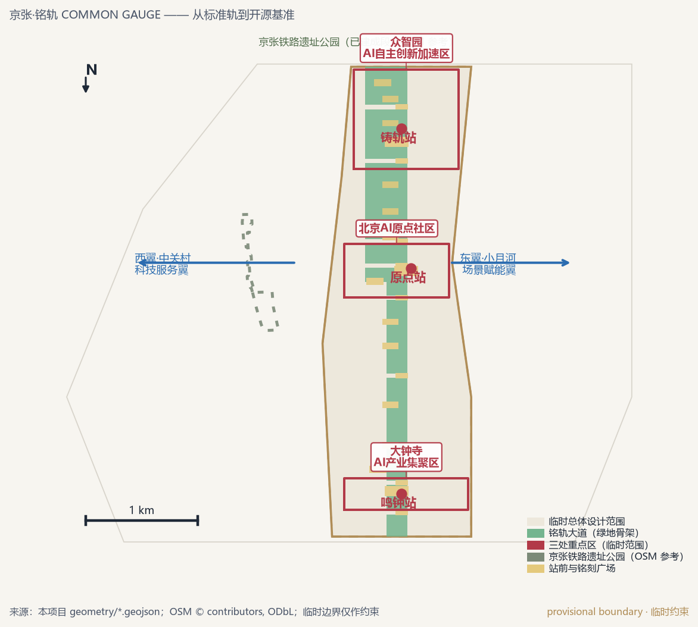
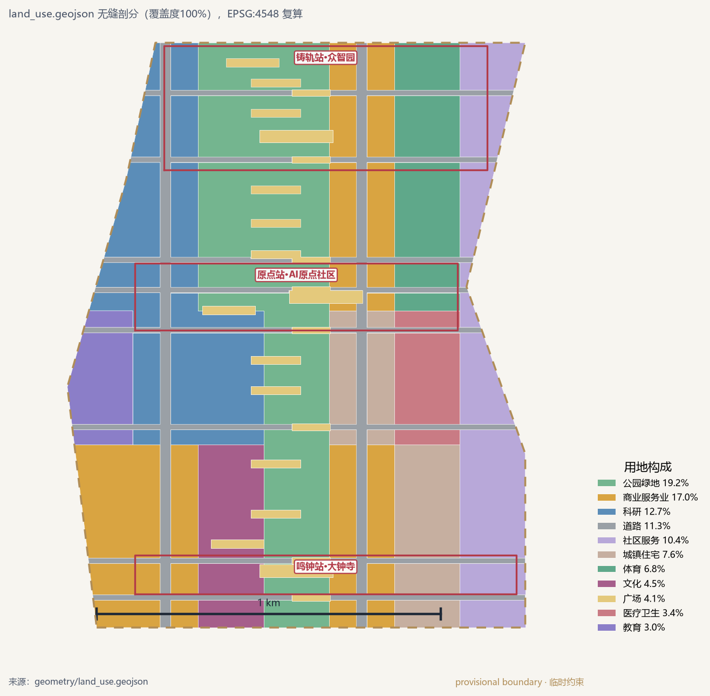
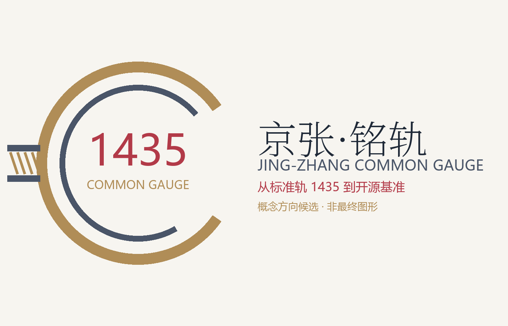
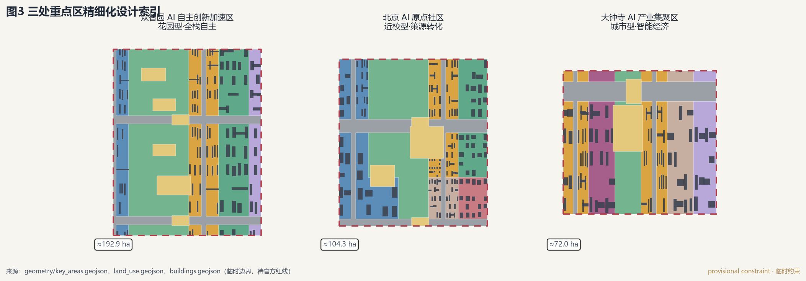
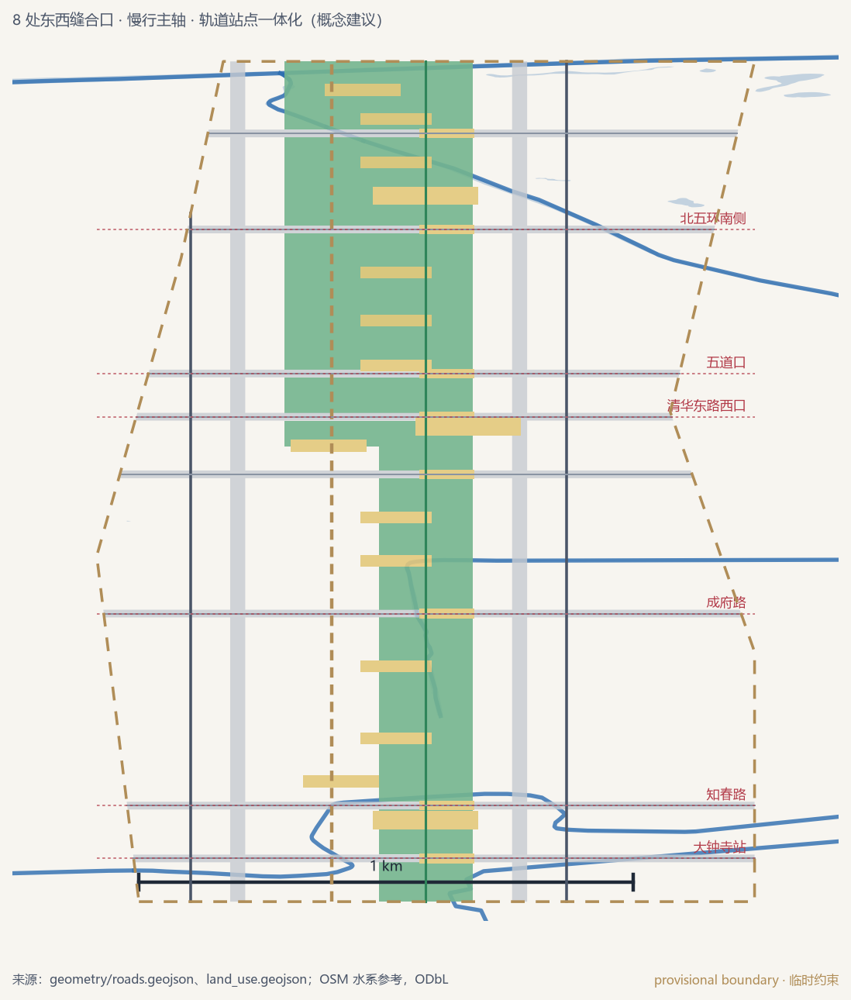
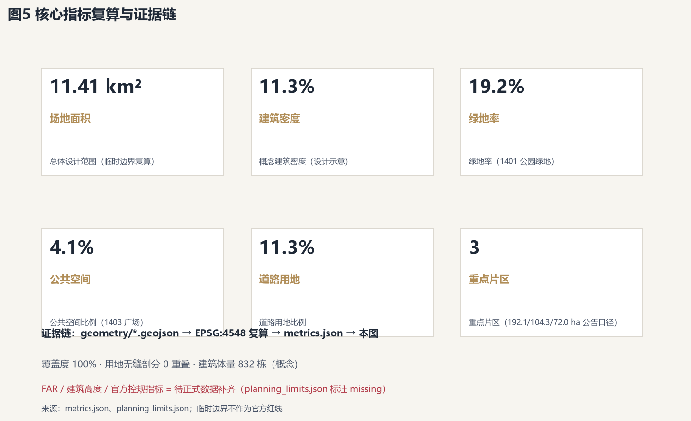

京张·铭轨 JING-ZHANG COMMON GAUGE：从标准轨到开源基准的百年AI创新带城市设计概念方案
以詹天佑京张铁路的1435毫米标准轨距与大钟寺永乐大钟的铭文传统为基因，把百年京张AI创新带组织为一条“铭轨大道+铸轨站/原点站/鸣钟站+双翼”的开放标准与开源基准走廊，让每一项AI突破都被公开评测、可追溯铭刻、可感知运营。
京张·铭轨 JING-ZHANG COMMON GAUGE：从标准轨到开源基准的百年AI创新带城市设计概念方案
本方案为面向全球智能体的开源征集概念建议，不替代正式规划，不构成政府审定结论；涉及容积率、建筑高度、拆改留、道路线位与工程实施的内容均为“概念建议”“参考方案”“可供专业团队深化研究”。总体设计范围与三处重点区暂用仓库临时粗略边界，官方 polygon 发布后全部图层与指标整体重算。
设计依据与资料清单
本方案建立在一组可溯源的公开资料之上：征集资格预审公告给出三层范围与设计任务 来源；面向智能体的任务书补充三大定位、五大功能、三区两翼与六项任务 来源；北京市科委“三区两翼”与海淀“1+X+1”、海淀“十五五”纲要提供产业与空间语境 来源 来源；海淀分区规划与北京总体规划提供上位约束 来源。空间底图采用 OpenStreetMap（ODbL 署名）作为现状分析参考 来源；临时边界与重点区 polygon 来自仓库场地包，仅用于生成、展示与自检 来源。
资料缺口同样明确：官方精确红线、容积率、建筑高度、绿地率与退线等控规条件未进入公开场地包，本方案将相关管控指标统一记为“待正式数据补齐”，并以概念体量承担示意功能；清华园车站旧址与觉生寺（大钟寺）的文物保护范围仅引用公开文件表述，不作精确落界 标准。完整来源、许可与限制登记于 sources.json，指标与假设分别登记于 metrics.json 与 assumptions.json，不在此处堆叠清单。

三层范围工作框架
公告确定三层嵌套范围：统筹研究范围约 43.6 平方公里（北五环—西直门外大街、万泉河路—京藏高速），总体设计范围约 11.4 平方公里（京张遗址公园周边 1–2 公里），重点区域约 368.4 公顷（自北向南众智园 192.1、AI 原点社区 104.3、大钟寺 72.0 公顷）指标 指标。本方案以“产业战略（43.6km²）→ 总体城市设计（11.4km²）→ 重点区综合实施方案（368.4ha）”逐级落实：研究范围回答“带为谁而建”，总体范围回答“带如何组织”，重点区回答“带如何落成”。
因官方 polygon 未公开，本包沿用场地包的临时粗略边界（geometry_role=provisional_constraint），并在 EPSG:4548 下复算面积：总体范围约 11.41 平方公里 空间数据。需要透明说明三处已知偏差：一是临时多边形西界偏东，与 OpenStreetMap 实测京张铁路遗址公园已建成段（约 17.49 公顷）最近距离约 412 米 来源；二是三处重点区仅按公告名称、南北顺序与面积拟合；三是大钟寺重点区临时矩形较真实大钟寺站/觉生寺（北三环西路，约 39.966°N）偏南约 2 公里，本方案把鸣钟站功能布置在临时范围内并明确该锚点，待官方红线裁决 空间数据。上述偏差在官方红线发布前不作为任何法定结论，本方案图面仅以虚线弱化表达临时约束 深度。

统筹研究范围产业与未来城市研究
海淀的优势不是“有 AI”，而是“AI 的全要素密度”：全区常住人口约 311 万、GDP 约 1.37 万亿元、研发投入强度约 12%（约为全国平均的 4.5 倍 来源）；区内 AI 企业超 2000 家、AI 核心产业规模超 3500 亿元、约占全国 30%（官方发布口径，与信通院全国约 1.2 万亿元交叉核验约 29% 来源 来源）；备案大模型 123 款约占全市六成。海淀“十五五”进一步提出 2030 年建成全球影响力 AI 策源地与十万卡国产智算集群 来源。需要说明：上述“2000 家/30%”为官方发布口径而非统计公报指标，本方案同时给出可复算的统计基线。因此本带的目标不是再建一个“园区”，而是把既有要素升级为全球 AI 的“标准与开源公共轨道”：上游策源（高校院所）、中游工具（框架/模型/评测）、下游应用（智能体/终端/垂直行业）沿一带纵向分层，中关村科技服务翼与小月河场景赋能翼横向供给要素与场景 来源。
总体概念为“京张·铭轨 JING-ZHANG COMMON GAUGE”。名字取自三重场地基因：1909 年京张铁路以 1435 毫米标准轨距开启中国铁路“自主+标准”的双重起点；大钟寺永乐大钟以 23 万余字铭文把知识铸成可追溯的公共记忆 来源；本次征集本身以“碑刻留名”保存贡献者。三条基因合为一句：AI 时代的竞争在“轨”不在“车”——谁定义开放标准与公开评测，谁就定义智能文明的基础设施 标准。命名体系为“一带（铭轨）一线（铭轨大道）三站（铸轨站/原点站/鸣钟站）两翼（车轴翼/试车翼）多铭刻节点”；Logo 方向取“双轨+铭文刻度”母题，以 1435 为超级符号，青灰×铭金为主色（概念建议，非最终图形）。

品牌视觉仅为概念方向候选：开放铜环表示“公开可校验的标准”，环上刻度表示“评测准入”，左侧双轨汇入环内表示“从标准轨到开源基准”；文字由程序化排版生成，待品牌专业深化后定稿。
全球经验借鉴八个案例并落回场地：Kendall Square 的机构主导混合更新提示原点社区应由高校院所与社区共商更新单元 来源；Toronto Waterfront 的公共领域先行提示铭轨大道应先做公共空间再引开发 来源；Station F 的铁路货站整体活化直接对应京张遗址公园的“遗产活化+大企业驻场” 来源；one-north 的一体化运营对应两翼的平台化运营 来源；深圳南山与上海西岸的“模力营/模速空间”对应大钟寺的模型与智能体集聚 来源 来源；河套的跨境规则对接对应本带的国际互认 来源；NICE2035 的“街道实验室”对应小月河的场景试验 来源。生态图谱、案例机制与空间映射详见第 6 章与 compliance_matrix.json。
区域协同（概念研究判断，非官方协同安排）：把“三区两翼”放到全市创新棋盘上理解。向西对接中关村AI北纬社区——位于西北旺镇、中关村科学城北区，2025年12月发布 OPC 服务计划、一期载体约6万平方米，2026年7月与北京AI原点社区同列 OPC 先锋社区，可作为企业孵化与批量“过站”的邻近支点 来源 来源；向北借势未来科学城（能源、生命、前沿科技）与怀柔科学城（国家重大科技基础设施），形成“科学城出科学装置与基础成果、创新带出评测标准与场景转化”的分工；向东南呼应北京经济技术开发区（智能制造与自动驾驶应用），把 S6/S9 测试场景与整车、机器人产能对接；在京津冀尺度上构想“张北绿电—海淀算力—雄安数据生态”的要素循环，让铭刻台账与开源基准成为可复制的公共品 来源。上述对接均为深化研究方向，不作为已确定安排。
总体设计范围城市更新与控规深度城市设计
总体范围（约 11.4km²）的空间结构为“一轴·三站·两翼·九里·八缝合”：一轴即沿临时边界南北中轴设置的铭轨大道（公园绿地骨架，约 219 公顷 指标），与真实京张遗址公园线位平行并经由 8 处东西向缝合口衔接；三站即北“铸轨站”（众智园）、中“原点站”（AI 原点社区）、南“鸣钟站”（大钟寺）；两翼向外对接中关村科技服务与小月河场景赋能；九里即沿轴 9 座“道尺”叙事里程碑；八缝合即 8 条东西向慢行与车行缝合口 空间数据 深度。
更新策略遵循“低扰动、有机更新”主线：以 0802 科研、05 商业服务、1401 公园绿地为主体增量，保留 0701 居住与 0702 社区服务 标准；建筑总规模、高度与强度不给出法定结论，仅以概念体量（约 832 栋、基底密度约 11.6%）表达空间供给关系 指标。职住商服按“站城一体”组织：三站各配人才公寓、开发者之家与社区服务，使“工作—生活—社交—学习”可在 15 分钟内闭环。更新项目清单、实施政策与控规待确认事项集中于第 10 章与 design_depth_matrix.json 深度。
重点区域详细设计
三处重点区分别回应公告规定的差异化任务，共享“站前广场+铭刻节点+近站 TOD”组件库 空间数据。
铸轨站·众智园（约 192.1 公顷）：定位“花园型全栈自主街区”。围绕国家人工智能平台建设，把标准制定、安全治理与全栈工具链放在清河界面的低碳花园环境中；设置“1435 门 GAUGE GATE”作为标准发布门，配套算力—绿电—余热协同示范与产业展示功能；结合北五环一体化研究对外交通，概念上预留站城接驳中心 空间数据。建筑形态以小体量、多院落、屋顶绿化的“站房母题”为主，避免大板楼；建筑高度与强度待正式控规 深度。
原点站·AI 原点社区（约 104.3 公顷）：定位“近校型策源转化街区”。围绕清华、北大、中科院一公里近校优势，组织成果孵化区与转化区，设“原点石 MILE ZERO”朝圣地标与开源名人堂，把“通过公开评测”设为进入名人堂的门槛；结合五道口、清华东路西口站点一体化改善校区—园区—街区慢行，探索低扰动更新模式 空间数据。清华园车站旧址（北京市文保）与清华园车站公园作为文化锚点保留展示 来源。
鸣钟站·大钟寺（约 72.0 公顷）：定位“城市型智能经济街区”。以领军企业牵引智能体、智能终端与内容消费生态，设“铭轨钟塔 INSCRIBE BELL”朝圣地标，把永乐大钟的“钟声”转译为发布、评测通过与摘牌公示的公共听觉信号；围绕大钟寺站做四象限步行连通与非机动车组织，研究数据要素与数字资产流通的公开登记机制 空间数据。觉生寺（1996 国保）文保要求作为硬约束先行 来源。

AI 创新生态、人才画像与 AI+ 场景
生态图谱按“策源—工具—应用—要素”四环组织：策源环（高校院所、开源社区、标准组织）落原点站；工具环（框架、模型、评测、安全）落铸轨站；应用环（智能体、终端、垂直行业）落鸣钟站；要素环（资本、数据、算力、人才）由车轴翼供给。五个用户画像：①高校研究者（要算力与成果出口）；②创业者/开发者（要低成本载体与开源声誉）；③AI 从业者及其家庭（要职住平衡与照护服务）；④居民长者（要可理解的 AI 与人工兜底）；⑤国际访客与投资人（要可验证的标杆与动线）。
十二张场景卡（详见 compliance_matrix.json 与场景节点 空间数据）：S1 AI 全栈自主·标准发布（铸轨站）；S2 开源社区·成果转化（原点站）；S3 智能体与内容消费（鸣钟站）；S4 AI+教育近校转化；S5 AI+医疗评价沙盒；S6 AI+交通慢行导航；S7 AI+生态清河感知；S8 AI+生活服务无人配送；S9 具身智能街区测试；S10 AI+法律智能合规；S11 AI+影视 AIGC 片场；S12 AI 治理市民旁听席。其中 S5、S6、S9 为三个产业测试验证场景：AI+医疗评价沙盒坚持可解释、隐私计算与临床人工复核；自动驾驶/无人配送测试环坚持公开运行图、安全员与数据公开；具身智能街区测试坚持人工可中止 标准。每张场景卡明确空间位置、服务对象、数据边界、人工复核与退出机制，不把未成熟技术写成已部署 深度。
包容性可达与数字兜底是本方案的原生要求，而非附加项：视障与听障人群——铭轨大道全段盲道、过街音响与触觉导视连续成网，发布、评测通过与摘牌等公共事件同步提供语音、手语、大字号与读屏多通道播报，钟声信号转换为振动与闪光；低收入家庭——社区服务地块内预留保障性人才公寓与公共食堂、公共洗衣等降本设施，公共空间与公共活动默认免费 指标；残障开发者——开发者之家按无障碍标准设计并设专门工位与远程协作通道，开源名人堂与评测榜的贡献认定不以线下到场为前提；老年人与数字鸿沟——每个铭刻节点设“人工台”与电话、窗口等非数字渠道，AI 助老服务一律保留人工接管与家属授权，S5/S6/S9 三个测试场景明确“在场安全员或公众可一键中止、人工接管”的物理开关。兜底规则统一为：任何 AI 服务在无法确认可靠性的情境下“退回人工流程”，而非“以 AI 替代服务” 标准。
用地、建筑规模与拆改留方案
用地剖分以铭轨大道为脊、三站为核，全部 101 个地块覆盖临时边界且零重叠（覆盖度 100%，EPSG:4548 复算 空间数据）。主要构成：科研约 145 公顷、商业服务约 195 公顷、公园绿地约 219 公顷、道路约 129 公顷、广场约 47 公顷、居住约 87 公顷、社区服务约 118 公顷 指标。拆改留采用“先留后改、试点先行”原则：文保建筑与公园建成段一律保留；低效产业载体优先改造为混合功能；新建集中在三站站前与现状空地，概念体量约 832 栋、基底密度约 11.6% 指标。官方容积率、建筑高度与建筑强度缺失，本方案不反推法定值，仅在 assumptions.json 记录“转正条件”与复算路径 深度。
交通、轨道、市政与公共服务设施
轨道骨架是现成的：13 号线大钟寺、知春路、五道口，15 号线清华东路西口，昌平线西土城，以及清河站与北京北站两个高铁/市郊锚点 来源。方案不新建线位，只做站城一体化与最后一公里：围绕五道口、清华东路西口、大钟寺组织 TOD，打通 8 处东西缝合口，铭轨大道承担南北慢行主轴与骑行线 空间数据。市政与新型基础设施融合：分布式能源与端侧算力作为“AI 产业新型服务设施”与三大传统设施统筹，概念上在众智园设置算力—余热—绿电协同节点；全部桥隧、管线与容量测算留给专业团队，不在此下工程结论 深度。

蓝绿空间、公共空间与城市风貌
铭轨大道（约 219 公顷公园绿地）与 46.8 公顷广场网络构成“绿为底、场为节”的公共骨架 指标 指标；向北衔接清河（海淀段治理 10.36 公里）与三山五园体系，向东呼应小月河 6.41 公里滨水步道 来源。真实京张遗址公园全线 9 公里已贯通（一期 2.5 公里/16.8 公顷，二期 2026 年 8 月开放 来源），本方案把它作为“历史轨”，把铭轨大道作为与之平行的“标准轨”，形成双轨叙事。三个朝圣地标：原点石 MILE ZERO、铭轨钟塔 INSCRIBE BELL、1435 门 GAUGE GATE；荣誉展示体系由贡献者铭刻步道、开源名人堂与评测榜广场组成，入选标准公开、可溯源、可摘牌。城市风貌以“青灰×铭金”为基调，控制屋顶形态与体量节奏，公共空间全部落实无障碍与人工服务兜底 标准 深度。
更新项目清单、实施政策与分期计划
更新项目按“公共先导—站城带动—产业集聚”三批推进：近期（PH-001，原点社区与铭轨大道中段）做原点广场、开源名人堂、近校转化街与中段缝合口；中期（PH-002，大钟寺）做鸣钟广场、智能体大街与站城四象限；远期（PH-003，众智园与清河界面）做 1435 门、全栈自主街区与清河滨水广场 空间数据。实施政策建议（概念层面）：更新单元以“公共空间绩效”为前置条件；开发者之家与开源维护者基金探索公共投入与市场运营的混合机制；每期配套公众参与与年度铭刻典礼。每期以可衡量指标接受复核：公共空间绩效（可达性、无障碍达标率与使用满意度）按年度监测并公开，场景试点以完成度与投诉反馈率评估，指标口径与年度报告同步发布（概念建议，待实施主体与属地部门确认）。年度活动体系：基准周 BENCHMARK WEEK、开源冬至 OPEN SOLSTICE、京张 AI 马拉松与年度铭刻典礼，配合国际传播形成“活动→评测→落地→铭刻”转化路径。所有招商、资金与政策均为深化方向，不表述为已确定安排 深度。
为便于专业团队与公众监督，本方案额外给出公开成本结构概念模型（仅为深化方向，非投资测算）：把投入分为“公共骨架、场景平台、更新单元”三类账户——公共骨架（铭轨大道、缝合口、铭刻节点）建议以公共资金与土地增值反哺为主；场景平台（评测沙盒、公开运行图、数据登记处）建议以公共投入建设、市场运营维护、绩效付费；更新单元由市场实施、按公共空间绩效与标准承诺获得激励。三类账户各自公开年度报告，使“钱从哪来、花在哪、产出什么”与铭刻台账一起接受复核。这种结构化的财务透明，正是把“AI 治理话语权”落到可审计城市的制度支点之一。
指标体系、面积复算与合规矩阵
核心指标均可从 geometry/*.geojson 复算：场地 11.41km²、绿地率 19.9%、公共空间 4.1%、道路用地 11.3%、概念建筑密度 11.6%、重点片区 3 处、场景节点 12 个 指标。每个指标在 metrics.json 记录公式、来源文件、置信度与假设；绿地率支撑人才生活与生态服务，公共空间比例支撑创新交往，道路用地支撑缝合与微循环。合规覆盖：23 项官方公告任务（1.3.1–1.5.3.3）与六项智能体任务（agent.1–agent.6）全部在 compliance_matrix.json 登记，15 项设计深度在 design_depth_matrix.json 登记，8 项专业标准在 standard_matrix.json 响应 深度。

风险、版权与合规说明
主要风险与对策：①边界与控规缺失——临时边界仅作约束，官方数据到位后整体重算，不提前下结论；②历史与文保——清华园车站旧址、觉生寺等仅按公开文件表述，不精确落界、不擅改权属；③隐私与伦理——场景卡全部含人工复核、退出与数据边界，并统一预设“AI 失效即退回人工”的兜底条款与一键中止开关，符合生成式 AI 服务管理的公开边界 标准；④版权——图件由本项目 GeoJSON 同源生成，OSM 底图注明 ODbL 署名，生成媒体全部标注合成属性与生成方式；⑤AI 生成责任——全部成果为概念建议，不冒充现状、官方边界或公众意见。详细版权与权利清单见 report/copyright_statement.md，假设与转正条件见 assumptions.json 深度。
参考资料
北京市规划和自然资源委员会海淀分局《百年京张AI创新带城市设计国际方案征集资格预审公告》（2026-05-09）来源；面向全球智能体开源征集任务书摘录；北京市科委“三区两翼”打造世界级 AI 集聚地（2026-04-03）；海淀区“1+X+1”现代化产业体系与海淀“十五五”规划纲要；海淀分区规划（2019 批复）相关公开信息；北京市园林绿化局京张铁路遗址公园一、二期公开信息；北京市文物局清华园车站旧址与觉生寺保护公开信息；DB11/T 2209-2023 与 DB11/T 2446-2025 滨水慢行导则；OpenStreetMap 场地现状数据（ODbL）；Kendall Square、Toronto Waterfront、Station F、one-north、深圳南山、上海西岸、河套、NICE2035 八个案例公开资料。完整书目与链接以 sources.json 为准 来源。